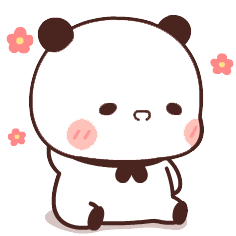

Selamat Ulang Tahun
Debby Marlina
20

🥳 Selamat Ulang Tahun
🙂 Awal Ketemu
🤓 Masuk Perkuliahan

😌 Gabung KuliKu
😅 Pertemuan di Batam

😳 Semester 4

😧 Perasaan yang Tersakiti
😤 Kilas Balik Masa UTS

😒 Liburan 3 Bulan
😵‍💫 Tergila-gila
😁 Map Soul

🧐 Semester 5

😏 Komsel

🤗 Berdamai

🥰 Berbunga-bunga
😘 Penutup